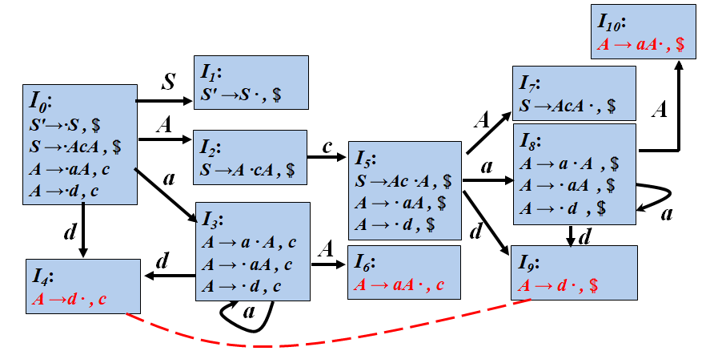
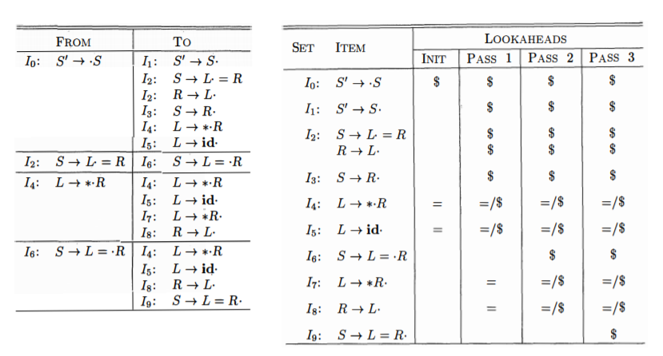

4. bottom-up parsing (2)
4. $\small\mathrm{LR}(1)$ 分析
S ($) / | \续
L = R ($) / \ | * R(=) L | Le.g.2
仍对于文法 $\small (0)\ S'\to S\ \ \ (1)\ S\to L=R\ \ (2)\ S\to R\ \ $
$\small(3)\ L\to *R\ \ (4)\ L\to\mathrm{id}\ \ \ \ \ \ \ \ \ (5)\ R\to L$
其中，$\small\mathrm{FOLLOW}(S)=\lbrace\ \$ \ \rbrace,$ $\small\mathrm{FOLLOW}(R)=\lbrace\ =\ \$ \ \rbrace $
可见，在特定位置，$\small R$ 的后继符是 $\small\mathrm{FOLLOW}(R)$ 的子集，完全使用 $\small\mathrm{FOLLOW}$ 集过于粗糙
$\small\mathrm{LR}(1)$ 分析按 $\small R\to L\ \boldsymbol{\cdot},\$ $ 的形式改写 $\small\mathrm{LR}$ 项
(1). 规范 $\small\mathrm{LR}(1)$ 项目
将形如 $\small A\to\alpha\boldsymbol{\cdot}\beta,\ a$ 的项称为 $\small\mathrm{LR}(1)$ 项，其中 $\small a$ 是一个终结符，它表示当前状态下 $\small A$ 必须紧跟此终结符，因此 $\small a$ 也被称作展望符 (
- 在形如 $\small A\to\alpha\boldsymbol{\cdot}\beta,\ a$ 且 $\small\beta\ne\varepsilon$ 的项中，展望符没有任何作用
- 在形如 $\small A\to\alpha\ \boldsymbol{\cdot},\ a$ 的项中，只有下一个输入等于 $\small a$ 时才可以按照 $\small A\to\alpha$ 归约
如果除了展望符外，两个 $\small\mathrm{LR(1)}$ 项目集是相同的，就称这两个项目集是同心的。
(2). $\small\mathrm{LR(1)}$ 分析表
CLOSURE(I) {
J = I
do
for each A → α ·Bβ, a in J
for each B → γ of G
for each b in FIRST(βa)
J = J ∪ {B → ·γ, b}
while (某一轮中没有新项加入到 J 中 )
return J
}
GOTO(I, X) {
J = ∅
for each A → α ·Xβ, a in I
J = J ∪ {A → αX · β, a}
return CLOSURE(J)
}
对形如 $\small A\to\alpha\boldsymbol{\cdot}B\beta,\ a$ 的项，根据产生式 $\small B\to\gamma\in P$ 求得等价状态 $\small B\to\boldsymbol{\cdot}\gamma, b$，其中 $\small b\in\mathrm{FIRST}(\beta)$，由于 $\small\beta$ 可能为空，因此 $\small b\in\mathrm{FIRST}(\beta a)$。
则构造 $\small\mathrm{LR(1)}$ 分析表的方法如下：
- $\small A\to\alpha\boldsymbol{\cdot}a\beta, b\in I_i$ 且 $\small\mathrm{GOTO}(I_i,a)=I_j$，则 $\small\mathrm{ACTION}(i,a)=\mathrm{sj}$
- $\small A\to\alpha\boldsymbol{\cdot}B\beta, b\in I_i$ 且 $\small\mathrm{GOTO}(I_i,B)=I_j$，则 $\small\mathrm{GOTO}(i,B)=\mathrm{j}$
- $\small A\to\alpha\ \boldsymbol{\cdot},a\in I_i$ 且 $\small A\ne S'$，则 $\small\mathrm{ACTION}(i,a)=\mathrm{rj}$
- $\small S'\to S\ \boldsymbol{\cdot} ,\$ \in I_i$，则 $\small\mathrm{ACTION}(i,\$ )=\mathrm{acc}$
5. $\small\mathrm{LALR}$ 分析
一个文法的 $\small\mathrm{SLR}$ 和 $\small\mathrm{LALR}$ 分析表总是会具有相同数量的状态，对于像
(1). 基本思想
某些 $\small\mathrm{LR(1)}$ 项目集是同心的，这些项目集关联的移入动作 (自动机的状态转移) 一定是不冲突的，区别在于展望符不同，即归约动作可能产生冲突。以例
$\small I_i:\lbrace\ R\to L\boldsymbol{\cdot},= /\ \$ \rbrace \ $$\small I_j:\lbrace\ R\to L\boldsymbol{\cdot},\$ \rbrace \ $
这两个状态的动作是不冲突的，因此可以合并。$\small\mathrm{LALR}$ 的核心思想就是合并具有相同核心的 $\small\mathrm{LR(1)}$ 项集。如果在根据合并后的项集族构造的语法分析表中没有冲突，给定的文法就称为 $\small\mathrm{LALR(1)}$ 文法。
(2). 局限性
① 合并同心项目集时可能产生归约-归约冲突
合并同心项集时一定不会产生移进-归约冲突，因为被合并的项集的产生式部分是一样的，如果原项目集不存在移进-归约冲突，那么合并后也不会产生。e.g.3 给定文法 $\small S'\to S,\ S\to \mathit{aAd}\ |\ \mathit{bBd}\ |\ \mathit{aBe}\ |\ \mathit{bAe},\ A\to c,\ B\to c$
它的 $\small\mathrm{LR(1)}$ 自动机存在两个状态 $\small\lbrace\ A\to c\ \boldsymbol{\cdot},d \ \ B\to c\ \boldsymbol{\cdot},e\rbrace$ 和 $\small\lbrace\ A\to c\ \boldsymbol{\cdot},e \ \ B\to c\ \boldsymbol{\cdot},d\rbrace$
② 合并同心项目集时可能推迟错误的发现
在处理错误输入时，$\small\mathrm{LALR}$ 分析器可能会在等同的 $\small\mathrm{LR}(1)$ 分析器报错前继续执行一些归约动作，但不会执行任何移入操作。
e.g.4 给定文法
$\small S'\to S,\ S\to \mathit{AcA},\ A\to \mathit{aA},\ A\to d$
它识别的语言为 $\mathrm{r}=\mathit{a^*dca^*d}$，且状态 $\small I_4$ 和 $\small I_9$ 是同心的。
设 $\small I_4$ 与 $\small I_9$ 被合并为状态 $\small I_{49}$，假设输入了错误的句子 $\small d\$ $，原本应在状态 $\small I_4$ 处报错，合并后则会在 $\small I_{49}$ 处执行一步归约，然后在 $\small I_2$ 处报错。
(3). 构建 $\small\mathrm{LALR}$ 分析表
设有一个形如 $\small I=A\to\alpha\boldsymbol{\cdot}\beta,a$ 的项，$\small X$ 是某个文法符号，集合 $\small C=\mathrm{CLOSURE(}\lbrace I\rbrace)$。在一个 $\small\mathrm{LR(1)}$ 自动机中，一个项的展望符可能由两种情况产生：
- 对于 $\small C\cup\mathrm{GOTO}(C,X)$，若结果总是包含 $\small B\to\gamma\boldsymbol{\cdot}\delta,b$ 且 $\small b\ne a$，就说 $\small b$ 是自发生成的 (
spontaneously ) - 特殊情况：$\small S'\to\boldsymbol{\cdot}S$ 的 $\small \$ $ 是自发生成的
- 如果 $\small b=a$，即 $\small b$ 是仅通过 $\small\mathrm{GOTO}$ 或者 $\small\mathrm{GOTO}$ 和 $\small\mathrm{CLOSURE}$ 一起生成的，就说 $\small b$ 从 $\small A\to\alpha\boldsymbol{\cdot}\beta$ 传播到了 $\small B\to\gamma\boldsymbol{\cdot}\delta$ 上
由于非内核项的展望符一定是由内核项求闭包得来的，因此，构建的过程可以先只考虑内核项，等扩散收敛以后再对每个项集应用闭包函数，即可求得 $\small\mathrm{LALR}$ 自动机。
Input:增广文法 G' Output: LALR(1)项集族 构造 G'的 LR(0)项集族 for (项集族中每个项集的内核集 K ) { for (K中的每个项 A → α · β) { J = CLOSURE({A → α · β, #}) if (B → γ · Xδ, a in J,且 a ≠ #)断定 a对于项 B → γX · δ是自发生成的 if (B → γ · Xδ, # in J)添加传播关系 (A → α · β, B → γX · δ) } }构建一张内核项的展望符表，初始只有自发的展望符。 根据传播关系表，不断迭代传播，直到收敛
e.g.5 以例 2 的文法为例，它不是一个 $\small\mathrm{SLR(1)}$ 文法。它的传播关系表与求 $\small\mathrm{LALR}$ 展望符的迭代过程如下：
